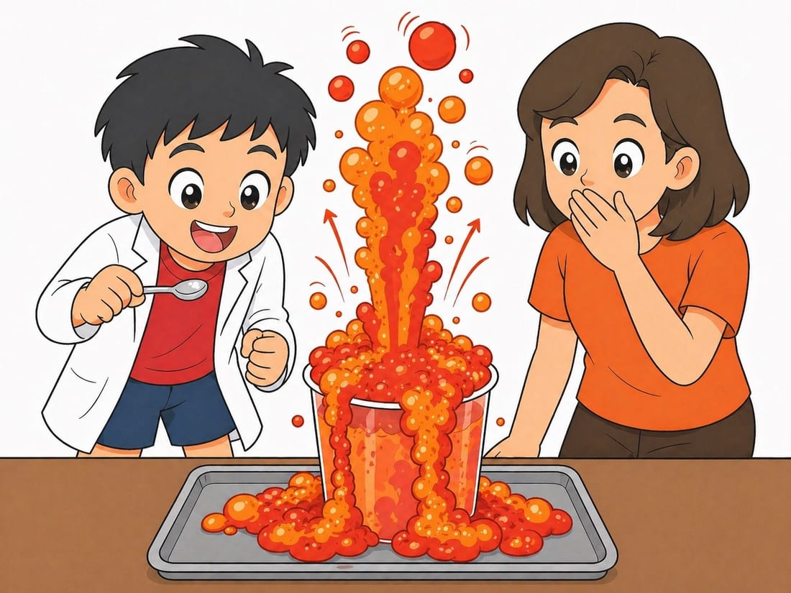
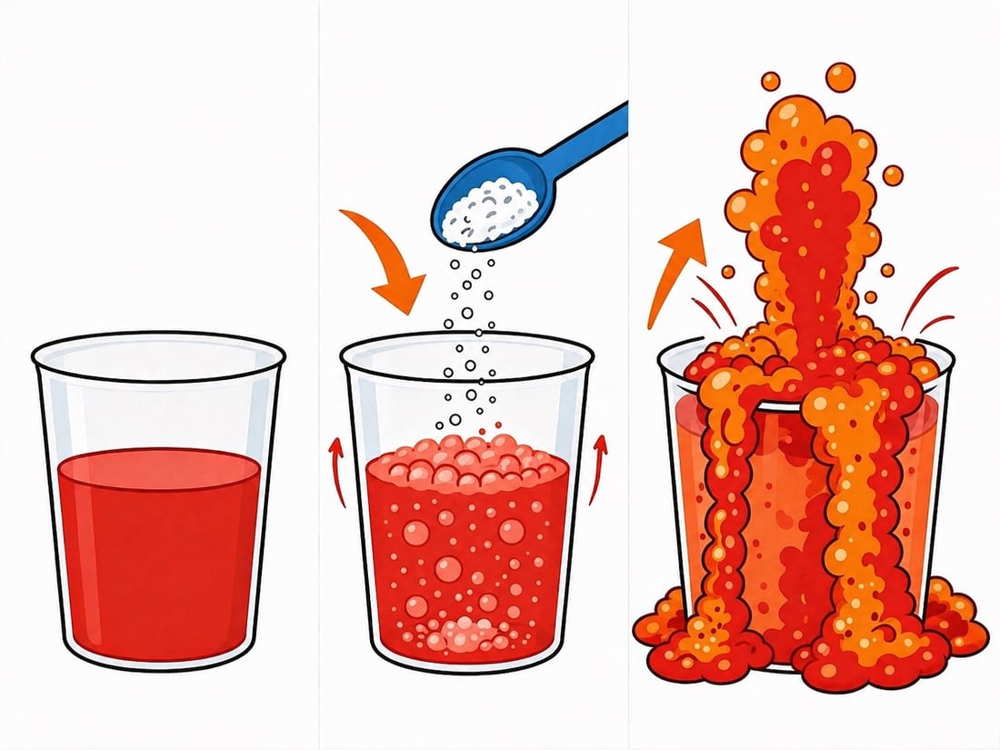
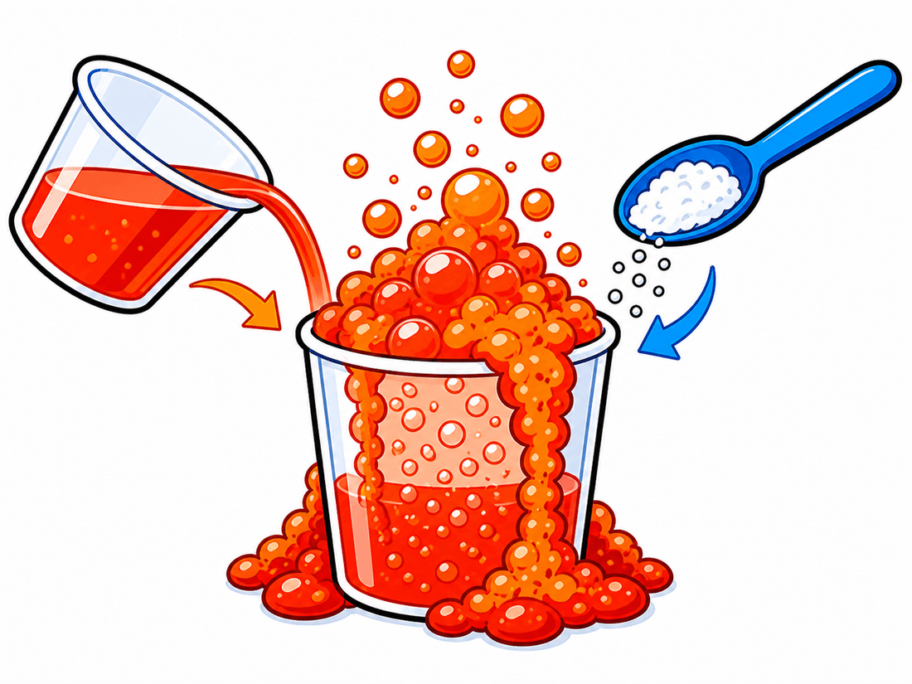
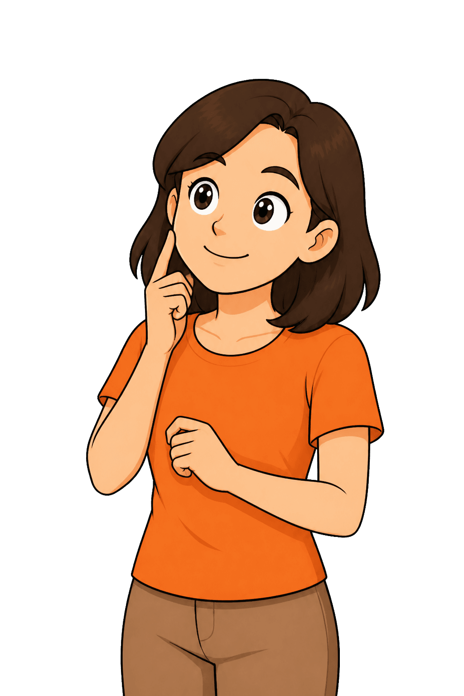

ภูเขาไฟโซดาระเบิด!
สวัสดีนักวิทย์น้อย!
โอ้โห!!! วันนี้เราจะสร้าง ภูเขาไฟ ในครัวของเราเอง! ไม่ต้องนั่งเครื่องบิน ไม่ต้องปีนภูเขา
แค่เอาของสองอย่างในครัวมาเจอกัน แล้ว… ฟู่ววว!!! ฟองสีแดงพุ่งล้นออกมาเหมือนลาวาไหลจริงๆ!
พร้อมยัง? นับถอยหลังเลย — 3… 2… 1… ระเบิดดด! 🌋
คำเตือนสำหรับพ่อแม่
ทำในอ่างล้างจาน บนถาด หรือกลางแจ้ง ฟองจะล้นเยอะกว่าที่คิดเสมอ • ให้เด็กสวมแว่นตากันน้ำกระเด็น (แว่นว่ายน้ำก็ใช้ได้) • สอนเด็กให้ ถอยหลัง 1 ก้าว ทันทีหลังเทเบกกิ้งโซดา อย่าก้มหน้าดูใกล้ • น้ำส้มสายชูแสบตา ถ้าเข้าตาให้ล้างด้วยน้ำสะอาดไหลผ่าน 5 นาที • ล้างมือหลังเล่นเสร็จทุกครั้ง
เตรียมอุปกรณ์กัน!
ขวด แก้วหรือขวดพลาสติกปากกว้าง ขนาด 250–500 มล.
สายชู น้ำส้มสายชู ประมาณ ½ ถ้วย
ผง เบกกิ้งโซดา 2–3 ช้อนโต๊ะ
สี สีผสมอาหารสีแดงหรือส้ม 3–4 หยด
ฟอง น้ำยาล้างจาน 2–3 หยด
ช้อน ช้อนตัก 1 คัน
ถาด ถาดหรือหนังสือพิมพ์ รองกันเลอะ
แว่น แว่นตากันกระเด็น 1 อัน
ขั้นตอน — สร้างปล่องภูเขาไฟกันเลย!
ปล่อง
วางแก้วไว้กลางถาด แล้วเทน้ำส้มสายชูลงไปประมาณครึ่งแก้ว หยดสีแดง 3–4 หยด และน้ำยาล้างจาน 2–3 หยด — นี่คือ "ลาวา" ของเรา!
เตรียม
ตักเบกกิ้งโซดา 2–3 ช้อนโต๊ะใส่ถ้วยเล็กไว้ก่อน เตรียมให้พร้อมในมือ แล้วถอยหลังหนึ่งก้าว

ระเบิด
เทเบกกิ้งโซดาลงไปทีเดียวหมด แล้วรีบถอยมือออก! ฟู่ววว!!! ฟองสีแดงพุ่งขึ้นล้นปากแก้วทันที — ดูสิว่าล้นสูงแค่ไหน!
สังเกต
นับดูว่าฟองไหลนานกี่วินาที แล้วลองแตะฟองเบาๆ ฟองเย็นหรืออุ่น? มันแตกเร็วหรือช้า?
ทำไมถึงเกิดแบบนี้?
ลองนึกภาพว่าในแก้วมี "ทีมสีแดง" กับ "ทีมสีน้ำเงิน" อยู่คนละฝั่ง ทีมสีแดงคือ น้ำส้มสายชู — นักวิทย์เรียกว่า "กรด" ทีมสีน้ำเงินคือ เบกกิ้งโซดา — นักวิทย์เรียกว่า "เบส" (หรือด่าง) พอสองทีมนี้เจอกัน มันไม่ได้ทะเลาะกันนะ — มัน "จับมือกันแล้วเปลี่ยนร่าง" กลายเป็นของใหม่ 3 อย่างพร้อมกัน คือ น้ำ + เกลือ + แก๊สคาร์บอนไดออกไซด์ (CO₂) เจ้าแก๊ส CO₂ นี่แหละตัวปัญหา! มันเกิดขึ้นเร็วมาก เป็นล้านๆ ฟองในวินาทีเดียว และแก้วเราแคบเกินไปที่จะเก็บมันไว้ได้ทั้งหมด มันเลยต้อง ดันตัวเองพุ่งขึ้นมา ล้นออกทางปากแก้ว! แล้วน้ำยาล้างจานทำอะไร? มันทำให้ฟองแต่ละฟอง เหนียวขึ้น ไม่แตกง่าย ฟองเลยกองซ้อนกันสูงเป็นภูเขา แทนที่จะแตกหายไปเฉยๆ นี่คือ "ปฏิกิริยาเคมี" — ของสองอย่างเจอกันแล้วกลายเป็นของใหม่ ที่ไม่เหมือนเดิมทั้งคู่!

ลองต่อยอดดู!
ลองใส่เบกกิ้งโซดา น้อยลงครึ่งหนึ่ง ฟองจะเตี้ยลงไหม? แล้วลอง เพิ่มน้ำยาล้างจาน อีก 5 หยด ฟองจะฟูขึ้นหรือเปล่า? จดผลไว้เทียบกันดู!

คำถามชวนคิด
(สำหรับพ่อแม่ถามลูกต่อ) "ถ้าเราเปลี่ยนน้ำส้มสายชูเป็นน้ำเปล่า แล้วเทเบกกิ้งโซดาลงไป จะเกิดฟองไหม?" (ไม่เกิด! เพราะน้ำเปล่าไม่ใช่กรด — ปฏิกิริยานี้ต้องมีทั้งกรดและเบสถึงจะเกิดได้ ลองทำจริงเทียบกันดูเลย จะเห็นชัดมาก!)
ฝึกสมองนักวิทย์น้อย
EF — ยับยั้งใจ: ต้องเทเบกกิ้งโซดา หลังจาก เตรียมทุกอย่างเสร็จเท่านั้น ฝึกรอให้ครบขั้นตอน • EQ — จัดการความตื่นเต้น: ตื่นเต้นได้เต็มที่ แต่ยังถอยหลังตามที่ตกลงไว้
ใบงานบันทึกนักวิทย์น้อย
ภารกิจที่ 1 : ภูเขาไฟโซดาระเบิด!